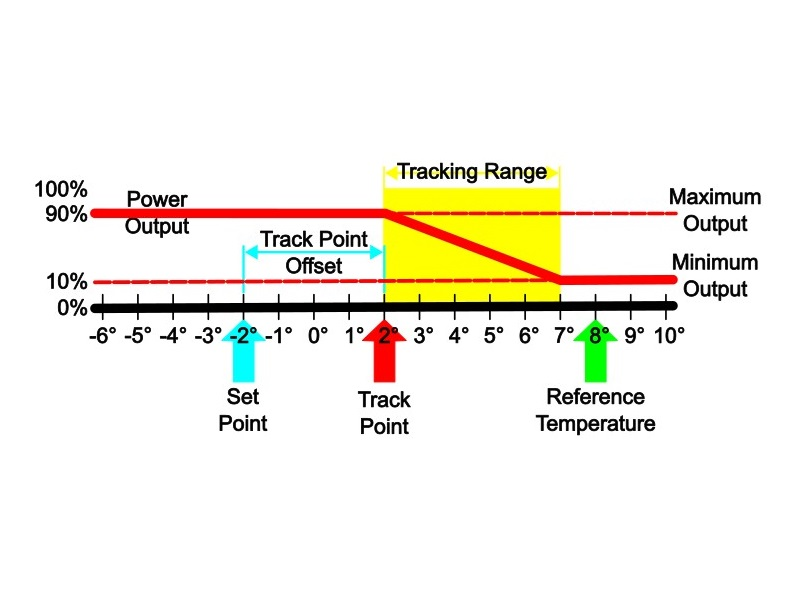
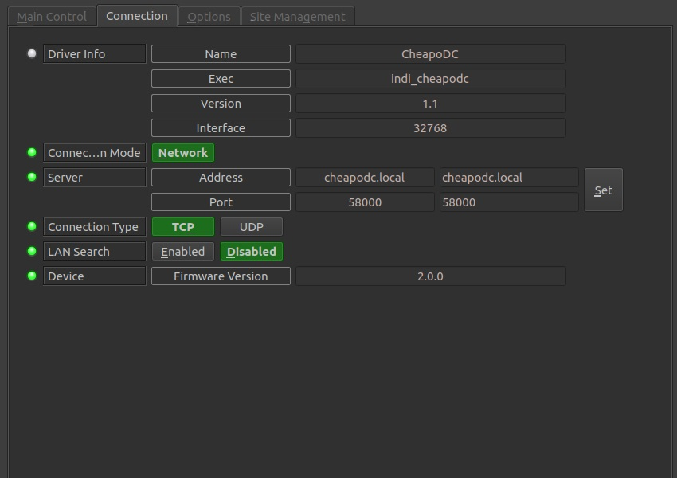
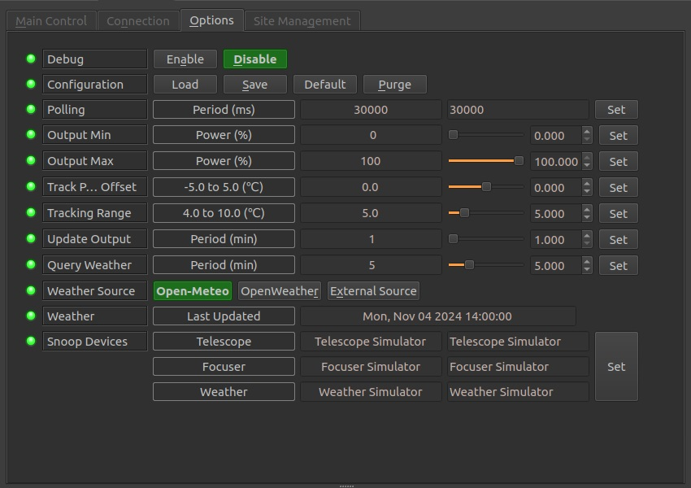
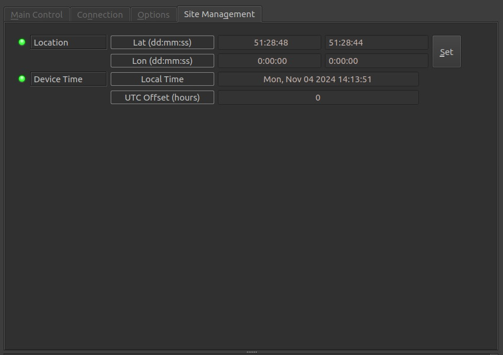

Installation
INDI CheapoDC driver is included with libindi 2.0.7+.
To Install the driver under Ubuntu:
sudo apt-add-repository ppa:mutlaqja/ppa
sudo apt-get update
sudo apt-get install libindi1
Features
The Cheapo Dew Controller, or CheapoDC, is a low cost, low component count, easy to build DIY dew controller based on
an ESP32-C3 mini.
Parts required include the ESP32-C3 mini, one or two MOSFET modules, a 12V to 5V buck converter, some protoboard,
a couple of RCA sockets, a 12V barrel socket and wire. Cost of the parts should be less than $20 for a unit that
controls 2 dew heater straps. Details for build and operation of CheapoDC can be found on the
project site.
Current features include:
- Automated tracking using either OpenWeather or
Open-Meteo to retrieve ambient temperature, humidity and dew point.
- Designed to work with Indilib with the ability to leverage geographic coordinates from your mount,
temperature/humidity from a weather device and temperature from your focuser temperature probe.
- Controller modes supporting both Automated and Manual operation.
- Flexible dew condition tracking modes supporting multiple methods to calculate output power to the two output channels.
- Can operate in WiFi Access Point mode in either a semi-Automated or Manual mode if no network or Internet
connectivity is available. But the CheapoDC does work best with internet connectivity,
A primary goal was to keep the build simple with minimal parts. This is done by leveraging the ESP32 WiFi capability
to query one of the
open weather service APIs. API queries are used for ambient temperature, humidity and dew point. This is then used
for calculating CheapoDC's power output.
No additional integrated components, such as temperature or humidity probes, are required. Many astrophotographers already have
temperature probes for their electronic focuser and these may be
leveraged through the INDI driver. The responsiveness and aggressiveness of the controller can be adjusted through
the CheapoDC configuration settings. All temperature values reported in the driver interface are in degrees celsius.
When running the driver for the first time, the default Server Address, cheapodc.local, should work. If not,
go to the Connection tab to change the Server Address.
Enter your CheapoDC IP address or modified hostname then retry the connection using the Connect button on the Main Control tab.
After connecting succesfully go to the Options tab and
save the settings.
Controller Power Output Calculation
Controller output is calculated by determining the position of a reference temperature withing a tracking range. This is outlined below.
Output Calculation Variables:
- Set Point = SP
- a temperature point set using the Set Point Mode selection.
- Reference Temperature = RT
- as set using the Temperature Mode selection.
- Track Point = TP
- the calculated temperature point where the Tracking Range starts. A Reference Temperature less than or
equal
to the Track Point will cause the controller to use Maximum Output.
- Track Point Offset = TPO
- a temperature offset applied to the Set Point when calcualting the Track Point relative to the Set
Point. The Track Point Offset may be set from -5.0°C to 5.0°C. The default is 0.0°C.
- Tracking Range = TR
- the temperature range, with the lower end starting at the Track Point. The controller output ramps up from Minimum
Output at the high end of the range to Maximum Output at the low end of the range. The range may be set to
values from 4.0°C to 10.0°C. The default is 4.0°C.
- Power Output = PO
- the percentage of power the controller is outputting to the dew straps. It varies from the Minimum
Output setting to the Maximum Output setting.
- Minimum Output = MinO
- the minimum percent power setting for the controller to output when not in the OffController
Mode. Defaults to 0%.
- Maximum Output = MaxO
- the maximum percent power setting for the controller to output when at full output. Defaults to 100%.
Output Calculation

Output Example

The Power Output (PO) curve is shown relative to the Track Point (TP) and the Tracking Range (TR). While the
Reference Temperature (RT)
is greater than the high end of the Tracking Range the Power Output is set to Minimum Output (MinO). The Power
Output ramps up linearly
through the Tracking Range from the Minimum Output to the Maximum Output (MaxO) as
the Reference Temperature drops.
- This example shows a Reference Temperature, RT = 8°C, which is greater than the upper end of the Tracking Range,
causing
Power Output to be set to Minimum Output. In this case Minimum Output is set to 10%.
- The upper end of the Tracking Range, at 7°C, is determined from the Set Point (SP = -2°C) plus the Track Point
Offset
(TPO = 4°C), creating a Tack Point, TP = 2°C, plus the Tracking Range (TR = 5°C).
Note The Set Point and the Reference Temperature values may vary from one output calculation to the next with
each weather update.
Operation
Connection
Connection details are based on the configuration of the hostname set in the CheapoDC CDCWiFi.json file installed on
the controller. Only TCP/IP
network connections are supported.

- Network: Use TCP with the
default port number of 58000.
CheapoDC uses mDNS with a default hostname of cheapodc.local which should allow for an automatic
connection.
If you changed CheapoDC hostname you will need to update the server address.
Options
Under the Options tab, you can configure parameters to optimize the operation of the dew controller.

- Debug: Not currently supported.
- Configuration: Load/Save/set to Default/Purge the configuration for connection setup as well
as Snoop Location and Snoop Temperature settings. CheapoDC controller settings are automatically saved in the
controller.
- Polling: Polling defines the period in milliseconds that the driver uses to retrieve data from
the dew controller. The default is 30,000 milliseconds
or 30 seconds. This is the recommended polling period with an Update Output period of 1 minute.
- Output Min: Minimum % power level to output to both channels. 0 to (Output Maximum - 1)
(Default 0).
- Output Max: Maximum % power level to output to both channels. (Output Minimum + 1) to 100
(Default 100).
- Track Point Offset: Number of degrees celsius to adjust the Track Point. -5.0 to 5.0 (Default
0.0).
- Tracking Range: Number of degrees celsius over which the Output Power will ramp when the Reference
Temperature is in this range. 4.0 to 10.0 (Default 5.0).
- Update Output: Period for recalculation of the Output Power in minutes. 1 to 20 (Default
1).
- Query Weather: Period for weather service API queries in minutes. 1 to 20 (Default 5).
- Weather Source:
The source used for getting the local weather temperature and humidity
which are used by the CheapoDC device to calculate the dew point and output power. The weather source may be:
- Open-Meteo: The CheapoDC will query the Open-Meteo service every Query Weather seconds for weather
updates. Open-Meteo is the default.
- OpenWeather: The CheapoDC will query the OpenWeather service every Query Weather seconds for weather
updates. An API Key is required for weather services from OpenWeather.
- External Source: The CheapoDC will NOT query a weather service but will use temperature and humidity
values pushed to it via it's API. A Weather Device must be set in the Snoop Devices section for
this setting to work properly. The weather update period is defined by the weather device and should be settable in the
weather device's configuration tabs.
- Weather API Key: An API key is required to use OpenWeather which can be acquired after registering for a free
OpenWeather account. If Open-Meteo is used then no API key is
required. This option field will only be displayed when the Weather Source is set to OpenWeather.
- Weather Last Updated: The date and time of the last weather report update. For Open-Meteo and OpenWeather
the update time is taken from service API response. For External Source the update time is set every time a weather device
value is pushed to the CheapoDC. The time is reported using local time based on the UTC Offset shown in the Site Management tab.
- Snoop Devices:Set the appropriate active device to be snooped for CheapoDC configuration and updates. Snoop for any
of the devices can be disabled by setting the device to blank.
-
Telescope: The telescope driver used to configure GEOGRAPHIC_COORD for LAT and LONG values shown on the
Site Management tab. The UTC Offset is also set from the telescope driver. It is important to configure this correctly so
that CheapoDC weather queries are made for the correct geolocation. Default device is Telescope Simulator.
-
Focuser: May be set to a focuser driver if the focuser has a temperature probe. When sent the probe temperature
will be sent to the CheapoDC and be shown on the Main Control tab in the Temperature - External Input field. If the CheapoDC
Temperature Mode is set to External Input then the External Input temperature will be used as the Reference Temperature for
calculating output power. Default device is Focuser Simulator.
-
Weather: May be set to a weather driver if if there is an indilib weather device such as a personal weather station
co-located with your observation location. When set, the temperature and humidity reported by the weather device will be used to update
CheapoDC's weather query temperature and humidity values for calculating dew point and power output.
The CheapoDC Weather Source must be set to External Source for these values to be pushed to the CheapoDC device and be used
for calculating output power. Default device is Weather Simulator.
After setting up the device Options, save the configuration using the Configuration - Save button.
Site Management
The site management tab may be used to configure the device location used by CheapoDC when making weather queries. By
default the CheapoDC driver is configured to get location geographic coordinates from another device such as a
telescope or mount. This the preferred configuration.

- Location:
- Lat (dd:mm:ss): The Latitude in degrees, minutes and seconds. Values: -90:00:00 to 90:00:00.
- Lon (dd:mm:ss): The Longitude in degrees, minutes and seconds. Values: 00:00:00 to 360:00:00.
- Device Time: The local time on the CheapoDC device based on the devices NTP server configuration (set using
the devices Wed UI) and the UTC offset.
- Local Time: Local date and time based on UTC offset.
Info - Name. (Default Telescope Simulator).
- UTC Offset: The offset from UTC time in hours. Should be set from the Telescope device. If no telescope device
is set then it will be pulled from the CheapoDC device settings.
Main Control
The main control tab is where the different CheapoDC operating modes may be set and current controller power output
may be monitored.
- Connection: Shows current connection state as well as the ability to Connect
or Disconnect.
- Controller Mode: Sets the primary operating mode for the dew controller:
- Automatic: In this mode the controller will automatically calculate and update the
output power based
on the Output Update period set in the Options tab. (Default)
- Manual: In this mode a user may manually set the output level with the OutPut Power
setting. The Output Power setting is writable only when the controller is in this mode.
- Off: The controller is off and output power is zero. Weather queries will continue and
update the weather values. If the CheapoDC comes up in WiFi AP mode then it will default to Off
until changed by the user.
- Output Power: Displays the current controller output power as a percentage from 0 to 100. May
also be used to enter output power values if Controller Mode is set to Manual.
- Temperature Mode: Sets the method used for determining the Reference Temperature to use in
output calculations.
- Weather Query: When in Weather Query mode the Ambient Temperature retrieved from the
weather service using the service query API will be used for the Reference Temperature. (Default)
- External Input: When in External Input mode the External Input temperature will be used
for the Reference
Temperature. This is the mode to use when snooping temperature values from a Focuser device with a
temperature probe.
- Temperature: Temperature values that may be used for calculating power output.
- Weather Query (°C): Ambient temperature returned from a weather service API
query. This value is used
for the output calculation when the Temperature Mode is set to Weather Query. If Weather Source is set to
External Source then temperature values sent from a configured Weather device will be seen here.
- External Input (°C): Temperature returned from an external input such as a configured
Weather device.This value is used for the output calculation when the Temperature Mode is set to External Input.
- Humidity: The relative humidity in percent returned from a weather service API query. If Weather Source is set to
External Source then humidity values sent from a configured Weather device will be seen here.
- Dew Point: The dew point in °C calculated from the current Weather Query Temperature and Humidity.
- Refresh: Force a weather service query and update of the driver property values.
Issues
There are no known bugs for this driver. If you find a bug, please report it at INDI's Github issues page